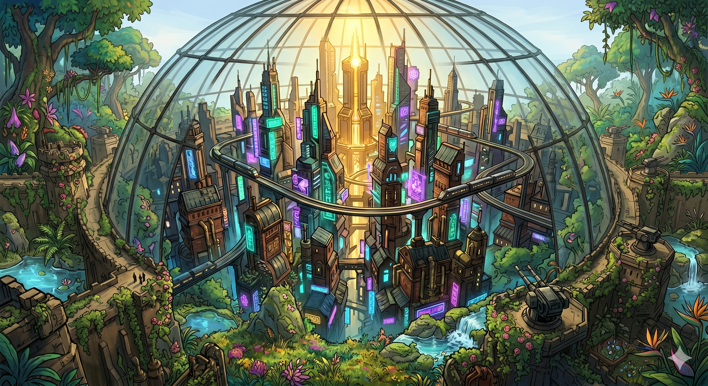
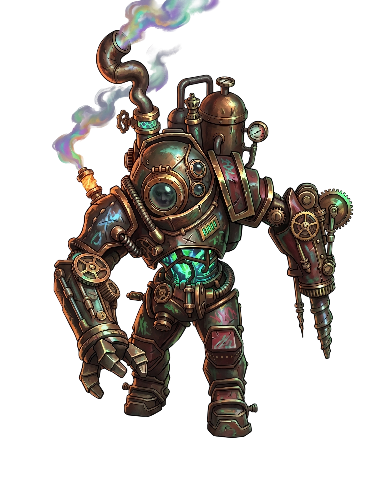

The World Beyond Noctoris
The world beyond the great walls of Noctoris is a beautiful death trap. Centuries of atmospheric decay have stripped the air of its life-giving properties, replacing it with a thick, swirling haze of toxic gases that would liquefy a human's lungs in seconds. Yet, life found a way; the flora and fauna adapted, evolving into a dense, emerald wilderness of carnivorous vines and neon-pulsing fungi that thrive on the very toxins that kill man. Inside the reinforced glass dome of Noctoris, humanity clings to its vertical metal forest of gears and steam, oblivious to the vibrant jungle pressing against the glass.
The Heist
Silas, a scavenger with a talent for finding what isn't his, didn't come to Dr. Thorne’s lab for a suit. He came for the "Aether-Core," a legendary power source. But as the crimson alarm lights began to scream and the heavy boots of Commander Drax’s guards thundered in the hall, Silas realized the core was already integrated into a massive, clunky suit of copper and brass. With no other exit and the door buckling under the force of the Hunter’s guards, Silas threw himself into the suit’s open chassis. The pistons hissed, the flexible leather seals tightened, and the glass porthole snapped shut just as the guards burst in.
The Reveal
Silas barely escaped into the damp, light-starved labyrinth of the slums. There, he met Kael, a disgraced engineer who lived in the shadows of the lower gears. As Kael inspected the suit’s glowing green canisters, his eyes widened. It wasn't a weapon—it was a portable ecosystem. The suit was designed to scrub the outside world's toxicity and convert it into high-pressure oxygen, allowing a human to walk through the "dead" world as if it were a garden.
The Pursuit
Word reached Commander Drax at the Citadel. Drax, a man who hates wasted time and values absolute discipline, immediately put the city under a total lockdown. He wasn't simply hunting a thief; he was hunting the only technology that could liberate humanity—or Drax himself—from the dome. To Drax, Silas wasn't just holding a suit; he was holding the key to a new empire.
The Escape & The Sacrifice
Kael led Silas through the "Bypasses," a series of forgotten, rusted pipes that fed directly into the Great Wall’s massive airlock system. They moved through the darkness, the copper suit clanking against the stone, until they reached the final heavy iron seal. Suddenly, the cold, rhythmic ticking of a brass timepiece echoed through the chamber. Drax was waiting.
"You are out of time, scavenger," Drax said, his polished boots clicking on the metal floor.
The airlock required someone to manually hold the massive, grinding gears in place while the pressure equalized. As the guards closed in, Kael looked at Silas and then at the iron lever.
"Go see the world for me," Kael whispered.
He threw his weight against the gears, his muscles straining as the heavy machinery groaned. He stayed behind, a lone figure holding back the tide of Drax’s soldiers, sacrificing his life to ensure the final door sealed behind Silas forever.
The Freedom
The airlock hissed one last time, and Silas was violently expelled onto the soil. He collapsed, waiting for the toxic sting of the atmosphere to take him, but it never came. Instead, he heard the steady, rhythmic hiss of the copper tubing delivering pure, clean air to his lungs.
Silas stood up and looked through the glass porthole. He didn't see a wasteland. He saw a breathtaking, neon-colored jungle of alien beauty—massive trees glowing with bioluminescence and strange creatures moving through the vibrant mist. He was free, breathing deep in a world he was told was dead, knowing that with the airlock sealed and Kael gone, there was no turning back.
